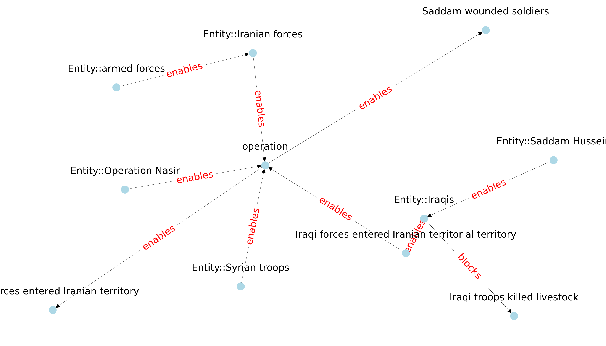
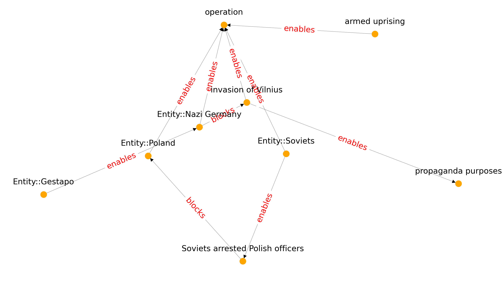
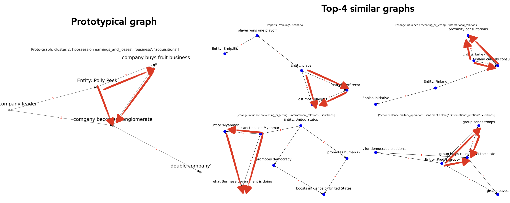

Lexical vs graph-based similarity metrics
Click on Schema matching in the Navigation bar to evaluate some examples!
1. Lexical similarity
In token-based methods like TF-IDF (and also text embeddings), certain words (e.g. `hurricane`) are strong indicators of similarity.
| Lexical similarity | |||
|---|---|---|---|
| Advantages | Quite homogenous clusters | Computationally inexpensive (counting) | Strong baseline |
| Disadvantages | Clusters `too` homogenous | Not so good at `partial` similarity, analogical reasoning | Existing resources are biased as they too based on TF-IDF |
Example similar texts using TF-IDF
Note: Not all text shown; the 2nd and 3rd examples here include event types concatenated to event mentions used for evaluation (not as part of the input).
Similar text 1: The 1933 Cuba-Bahamas hurricane was last of six major hurricanes , or at least a Category 3 on the Saffir-Simpson hurricane wind scale...
Similar text 2: The 1941 Texas Catastrophe::hurricane , the second Catastrophe::storm of the 1941 Atlantic hurricane season , was a large and intense tropical Catastrophe::cyclone...
Similar text 3: The 1815 North Carolina Catastrophe::hurricane Causation::caused the most severe flooding in New Bern , North Carolina since 1795
2. Structural + Lexical similarity
There are also cases we can match event sequences (texts) based on a single concept like `operation` and then further match by node characteristics. In the examples below, the graphs are both characterized by 4-nary `operation` nodes.
Text: Operation Nasr, fought in early January 1981 , was a major battle of the Iran-Iraq War...
Text: Operation Ostra Brama ( lit . Operation `` Sharp Gate '' , English : Operation `` Gate of Dawn '' ) was an armed conflict during World War II between the Polish Home Army and the Nazi German occupiers of Vilnius...
3. Conceptual similarity
cf. Motif discovery (bioinformatics use such methods to discover related chemical compounds)
Example 1.
Example 2.
In this example, we can find similarity between events that are conceptually similar. In this case, the Invasion of Poland (with armies attacking from all sides) is matched to a head-on train collision.